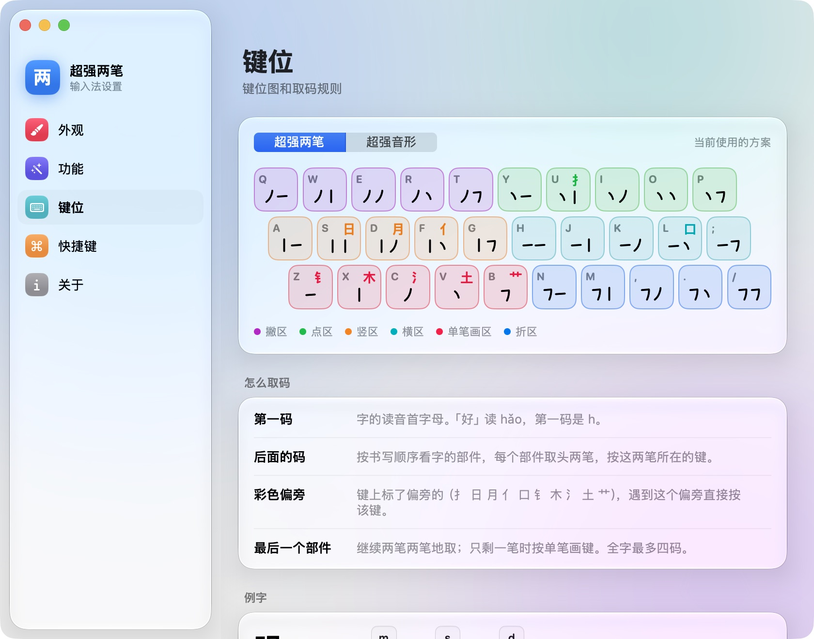
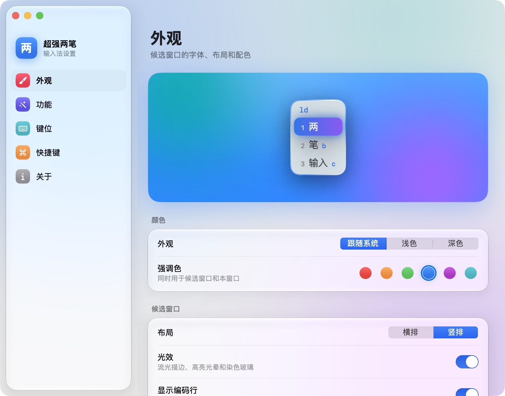

壹
四键自动上屏
每个方案约十二万词条。四键打满且无重码，字直接落到纸上。
候选词旁边的红色小字，是这个词还没按的键，已经打过的编码不再重复。「你好」和「您好」编码相同，这时不会自动上屏，停下来让你选。
每个方案约十二万词条。四键打满且无重码，字直接落到纸上。
候选窗不复述你打过的编码，只告诉你下一键按什么，学码表的时候尤其省眼睛。
超强两笔之外，也内置超强音形：编码只用 26 个字母。在设置里切换，立即生效。
不会拆的字，以 i 开头打拼音，旁边给出它的编码。以 ' 开头则临时输入英文。
一个文本文件，一行一个词。不写编码就按构词规则自动编码，保存即生效。
标准的系统输入法，由 macOS 按需加载。不需要辅助功能权限，不常驻登录项。


下载 cqlb-ime-installer.pkg，双击打开。
安装包本身尚未签名，首次打开会被 macOS 拦下。到 系统设置 → 隐私与安全性，在页面底部点「仍要打开」，再按提示装完。输入法程序本身已通过 Apple 公证。
到 系统设置 → 键盘 → 文本输入 → 输入法，点 +，在「简体中文」里选「超强两笔」。
不想用安装包：下载 cqlb-ime-notarized.zip，解压后把 cqlb-ime.app 放进 /Library/Input Methods/，注销并重新登录。
| 切换中英文 | ⌥空格，或单击 Shift |
| 选候选词 | 1–9，或鼠标点击 |
| 上屏高亮的词 | 空格 |
| 移动高亮 | ↑↓←→Tab |
| 翻页 | -= |
| 拼音反查 | i 加拼音 |
| 临时英文 | ' 加英文 |
| 上屏原始输入 | 回车 |
| 清空输入 | Esc |